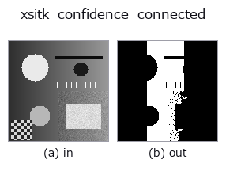

extra op• Datenarten: image → region
• Aufruf: fullseye.apply(img, "xsitk_confidence_connected", a=0.5, b=0.5) (das 2-D-Modell ist ein Bild plus zwei skalare Regler a,b∈[0,1])

*Die Abbildung ist die tatsächliche Ausgabe auf einer synthetischen 128×128-Eingabe. Links Eingabe, rechts Ausgabe. Punktwolken als Draufsicht-Streudiagramm (Helligkeit = z), 1-D-Reihen als Linie, Volumen als Maximum-Projektion entlang z, Videos als mittleres Bild, komplexe Bilder als Betrag; Rückgabewerte, die kein Bild ergeben, werden als Werte gezeigt.*
Regler a durchfahren (0,1 / 0,5 / 0,9, der andere Regler auf Standard):
▸ xsitk_confidence_connected: knob a sweep (docs site)
Regler b durchfahren (0,1 / 0,5 / 0,9, der andere Regler auf Standard):
▸ xsitk_confidence_connected: knob b sweep (docs site)
Auf anderen Bildern (synthetische Szene / Foto / Münzen. Obere Reihe: Eingaben, untere Reihe: deren Ausgaben. Regler auf Standard):
▸ xsitk_confidence_connected: other inputs (docs site)
*Die 4. Spalte ist eine Farb-Eingabe (H,W,3). Dieser Op verarbeitet Farbe, ohne Kanäle zu vermischen (er faltet den Farbkanal nicht als dritte Raumachse).*
Confidence-Connected-Regionenwachstum (SimpleITK `ConfidenceConnected`). Verwendet die Bildmitte als Saatpunkt, bildet aus Mittelwert und Standardabweichung des aktuellen Bereichs ein Intervall 'Mittelwert +/- Multiplikator * Standardabweichung' und erweitert den zusammenhängenden Bereich, während dieses Intervall iterativ aktualisiert wird (eine statistischere Art der Schwellenwertbestimmung als bei xsitk_connected_threshold).
> Die ausführliche Beschreibung unten ist der Originaltext — Zusammenfassung und Überschriften sind übersetzt.
`a は反復回数(1+int(a*5) で 1〜6)、b は標準偏差の倍率(1.0+3.0*b` で 1〜4)を振る。初期近傍半径は 2 固定。画像中心付近に対象があることを前提とした op。
• Leitfaden zur Familie gallery2d_color_artistic
• Katalog der Beispieldaten (Download-URLs / Lizenzen) — 2-D nutzt skimage.data (BSD/Public Domain) plus synthetische Bilder, 3-D nennt Download-URLs echter Datenquellen (Stanford, PDS, …).
• Herkunft und Literatur der Operatoren — die Quellen der Forschung/Verfahren, auf denen diese Operatorfamilie beruht.
• Der kanonische Algorithmus (Autor, Jahr) und seine Anwendungen stehen im Familienleitfaden oben.
Das Programm unten ist nachweislich lauffähig (gleiche Eingabe wie die Abbildung). In der Studio-Hilfe wird dieser Block zu Schaltflächen, die es sofort laden und ausführen.
xsitk_confidence_connected 0.50 0.50
▸ Load this pipeline · Load & run
• gallery2d_color_artistic — py -3.11 examples/gallery2d_color_artistic.py
region als Eingabe)identity · reg_erode · reg_dilate · reg_open · reg_close · fill_holes · select_largest · remove_small
extra)xsitk_curvature_flow · xsitk_minmax_curv_flow · xsitk_curv_aniso_diff · xsitk_laplacian_sharpen · xsitk_grayscale_fillhole · xsitk_grayscale_grindpeak · xsitk_opening_by_recon · xsitk_closing_by_recon
*Provenance: ops.py — 2D Operator-Registry. Diese Notiz wird von tools/opdocs.py md erzeugt (nicht von Hand bearbeiten).*
© 2026 Kazufumi Furuse — Fullseye operator documentation. Licensed under Apache-2.0.
{kind=link}
{kind=link}
{kind=link}